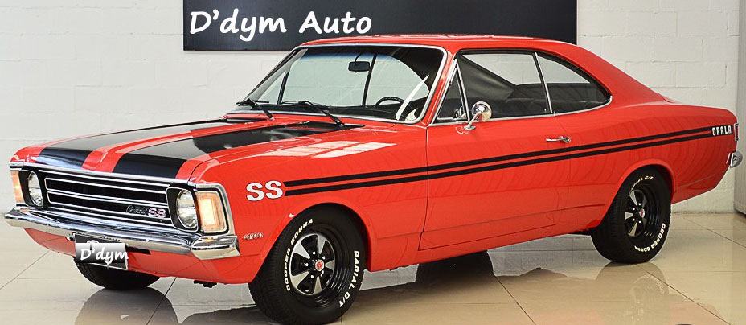

opala ss
Em 1970, a versão esportiva SS (na carroceria quatro portas) foi lançada para disputar o mercado de carros esportivos, vindo com acabamento diferenciado, como volante de 3 raios, rodas esportivas, painel com conta-giros (com escala até 6 mil rpm) e faixas esportivas com a inscrição SS nos para-lamas, sendo o destaque da versão o então novo motor 4100, bancos individuais e câmbio de 4 marchas no assoalho.
No ano seguinte, com o lançamento da carroceria 2 portas, quase todas as unidades SS nesta configuração, havendo mínima produção na carroceria 4 portas, sendo logo retirada de oferta. Em 1973, com a crise do petróleo, a Chevrolet lançaria a versão SS4 do Opala para 1974, com motor de 4 cilindros. Ainda em 1974, o motor 250-S (o mesmo 4100, mas com tuchos mecânicos) seria lançado para rivalizar com os modelos Maverick GT, da Ford, e Charger R/T, da linha Dodge, ambos com motores V8. [5]
Os modelos SS seriam oferecidos até 1980, sofrendo modificações conforme os anos, como a disposição das faixas e demais adereços